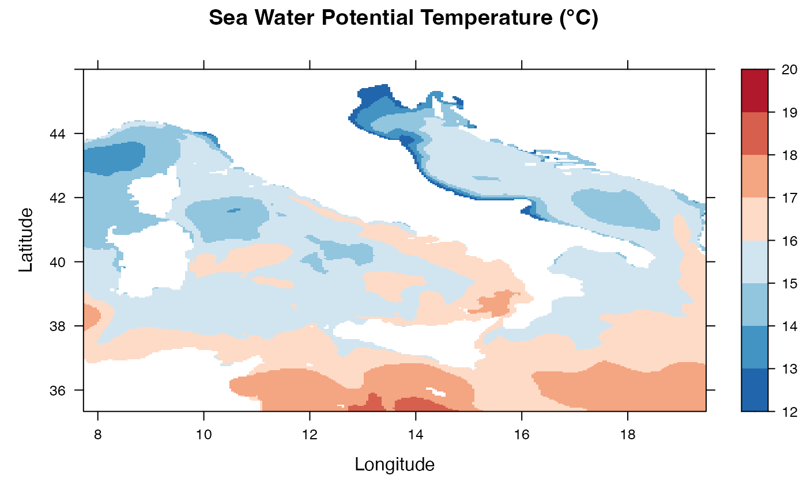
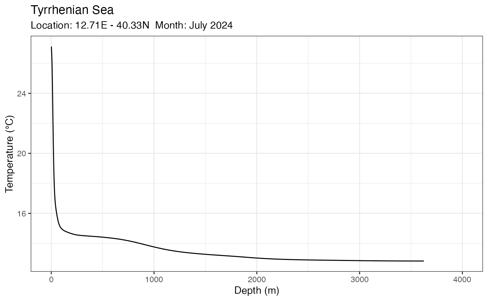

Example 1. How to open and visualise Copernicus Marine Data in R
Source:vignettes/articles/91_CMEMS.Rmd
91_CMEMS.RmdThe Copernicus Marine Service has a page
that demonstrates how to open and visualise Copernicus marine data in
R using the ncdf4 package. This page shows how
to get the same results - and more - using the ncdfCF
package.
Main packages
This example uses the ncdfCF package to access and
interpret the marine data. For visualisation some optional packages are
loaded later on.
Open netCDF files and load the data
# Open the netCDF file
library(ncdfCF)
(ds <- open_ncdf("../../tests/testdata/cmems_mod_med_phy-tem_anfc_4.2km_P1M-m_1748594717636.nc"))
#> Warning: Unmatched `coordinates` value 'lat' found in variable 'bottomT'.
#> Warning: Unmatched `coordinates` value 'lon' found in variable 'bottomT'.
#> Warning: Unmatched `coordinates` value 'lat' found in variable 'thetao'.
#> Warning: Unmatched `coordinates` value 'lon' found in variable 'thetao'.
#> Warning: Unmatched `coordinates` value 'lat' found in variable 'bottomT'.
#> Warning: Unmatched `coordinates` value 'lon' found in variable 'bottomT'.
#> Warning: Unmatched `coordinates` value 'lat' found in variable 'thetao'.
#> Warning: Unmatched `coordinates` value 'lon' found in variable 'thetao'.
#> <Dataset> cmems_mod_med_phy-tem_anfc_4.2km_P1M-m_1748594717636
#> Resource : ../../tests/testdata/cmems_mod_med_phy-tem_anfc_4.2km_P1M-m_1748594717636.nc
#> Format : netcdf4
#> Collection : Generic netCDF data
#> Conventions: CF-1.11
#> Has groups : FALSE
#>
#> Variables:
#> name long_name units data_type
#> bottomT Sea floor potential temperature degrees_C NC_FLOAT
#> thetao Sea temperature degrees_C NC_FLOAT
#> axes
#> longitude, latitude, time
#> longitude, latitude, depth, time
#>
#> Attributes:
#> name type length
#> Conventions NC_STRING 1
#> title NC_STRING 1
#> institution NC_STRING 1
#> source NC_STRING 1
#> contact NC_STRING 1
#> references NC_STRING 1
#> comment NC_STRING 1
#> subset:source NC_STRING 1
#> subset:productId NC_STRING 1
#> subset:datasetId NC_STRING 1
#> subset:date NC_STRING 1
#> value
#> CF-1.11
#> Sea Temperature (3D) - Monthly Mean
#> Centro Euro-Mediterraneo sui Cambiamenti Climat...
#> MedFS EAS9
#> servicedesk.cmems@mercator-ocean.eu
#> Please check in CMEMS catalogue the INFO sectio...
#> Please check in CMEMS catalogue the INFO sectio...
#> ARCO data downloaded from the Marine Data Store...
#> MEDSEA_ANALYSISFORECAST_PHY_006_013
#> cmems_mod_med_phy-tem_anfc_4.2km_P1M-m_202411
#> 2025-05-30T08:45:17.637ZAll overall information about the file is listed:
Variables:
bottomTandthetao, with 3 and 4 axes, respectively.Global attributes: title, source, references, etc.
Also important is the global attribute Conventions,
which tells us that this netCDF file is encoded using the CF-1.11
metadata conventions. The ncdfCF package uses this to
interpret all the information in the file that give the variables
“meaning”, such as their axes, units, time coordinates, etc.
(Please note that the warnings at the top are generated because there is an error in the definition of the “coordinates” attribute of the data variables. That has no negative effect on using this file. Further down you’ll see what caused these warnings to be generated.)
Get an ocean variable
There are two variables in the data set: bottomT and
thetao. We’ll work here with thetao: Sea
temperature.
# Assign the theta data variable
(thetao <- ds[["thetao"]])
#> <Variable> thetao
#> Long name: Sea temperature
#>
#> Values: (not loaded)
#>
#> Axes:
#> axis name long_name length values
#> X longitude Longitude 282 [7.750002 ... 19.458336]
#> Y latitude Latitude 256 [35.354168 ... 45.979168]
#> Z depth Depth 141 [1.018237 ... 5754.043945]
#> T time Time 12 [2024-01-01 ... 2024-12-01]
#> unit
#> degrees_east
#> degrees_north
#> m
#> seconds since 1970-01-01 00:00:00
#>
#> Attributes:
#> name type length value
#> units NC_STRING 1 degrees_C
#> standard_name NC_STRING 1 sea_water_potential_tempera...
#> long_name NC_STRING 1 Sea temperature
#> valid_max NC_FLOAT 1 40
#> valid_min NC_FLOAT 1 1(Coming back to the warnings at the beginning: The “coordinates” attribute has the value “time depth lat lon”. If you look at the axes, however, you can see that the first two are called “longitude” and “latitude”, rather than their short versions “lon” and “lat”: a warning will be generated.)
From looking at the properties of the data set we already knew that data variable thetao has 4 axes. Now that we drill down to the details of the data variable you can see the range of values and their physical unit. You can also inspect the coordinates along the axes quite easily:
# The "time" coordinates
thetao$axes[["time"]]$coordinates
#> [1] "2024-01-01" "2024-02-01" "2024-03-01" "2024-04-01" "2024-05-01"
#> [6] "2024-06-01" "2024-07-01" "2024-08-01" "2024-09-01" "2024-10-01"
#> [11] "2024-11-01" "2024-12-01"
# The "depth" coordinates
thetao$axes[["depth"]]$coordinates
#> [1] 1.018237 3.165747 5.464963 7.920377 10.536604 13.318384
#> [7] 16.270586 19.398211 22.706392 26.200399 29.885643 33.767673
#> [13] 37.852192 42.145039 46.652210 51.379860 56.334286 61.521957
#> [19] 66.949493 72.623688 78.551498 84.740044 91.196632 97.928726
#> [25] 104.943977 112.250206 119.855431 127.767838 135.995804 144.547897
#> [31] 153.432846 162.659622 172.237350 182.175354 192.483139 203.170441
#> [37] 214.247162 225.723404 237.609467 249.915848 262.653229 275.832520
#> [43] 289.464783 303.561310 318.133545 333.193146 348.751953 364.821960
#> [49] 381.415436 398.544708 416.222321 434.461060 453.273773 472.673492
#> [55] 492.673462 513.286987 534.527588 556.408875 578.944580 602.148621
#> [61] 626.034912 650.617554 675.910706 701.928650 728.685608 756.196045
#> [67] 784.474304 813.534851 843.392151 874.060669 905.554810 937.889099
#> [73] 971.077881 1005.135498 1040.076294 1075.914307 1112.663696 1150.338379
#> [79] 1188.952148 1228.518799 1269.051758 1310.564209 1353.069336 1396.579956
#> [85] 1441.108643 1486.667847 1533.269409 1580.925171 1629.646606 1679.444824
#> [91] 1730.330322 1782.313599 1835.404541 1889.612671 1944.947144 2001.416626
#> [97] 2059.029053 2117.792480 2177.714111 2238.800293 2301.057617 2364.491699
#> [103] 2429.107666 2494.910156 2561.903076 2630.089844 2699.473633 2770.056641
#> [109] 2841.840820 2914.826904 2989.015869 3064.407471 3141.001465 3218.796143
#> [115] 3297.790283 3377.981445 3459.366211 3541.941895 3625.703857 3710.647461
#> [121] 3796.768066 3884.059570 3972.516113 4062.130371 4152.895996 4244.804199
#> [127] 4337.847656 4432.017578 4527.304199 4623.698730 4721.191406 4819.770996
#> [133] 4919.427246 5020.149414 5121.925781 5224.744629 5328.593750 5433.460938
#> [139] 5539.333496 5646.199219 5754.043945The thetao data variable has 12 months along its “time”
axis and 141 “depth” values. Let’s look at the temperature at the
surface. The first coordinate value is 1.018237m below the surface but
it actually represents the surface layer. We can extract this data using
the $subset() method of the data variable, using a margin
around the value:
(surfaceT <- thetao$subset(depth = c(0, 2)))
#> <Variable> thetao
#> Long name: Sea temperature
#>
#> Values: (not loaded)
#>
#> Axes:
#> axis name long_name length values
#> X longitude Longitude 282 [7.750002 ... 19.458336]
#> Y latitude Latitude 256 [35.354168 ... 45.979168]
#> Z depth Depth 1 [1.018237]
#> T time Time 12 [2024-01-01 ... 2024-12-01]
#> unit
#> degrees_east
#> degrees_north
#> m
#> seconds since 1970-01-01 00:00:00
#>
#> Attributes:
#> name type length value
#> units NC_STRING 1 degrees_C
#> standard_name NC_STRING 1 sea_water_potential_tempera...
#> long_name NC_STRING 1 Sea temperature
#> valid_max NC_FLOAT 1 40
#> valid_min NC_FLOAT 1 1Note that there is only 1 “depth” value left. The axis is still there so that you can look at its properties.
Quick map plot
# Get the longitude and latitude coordinates
longitude <- thetao$axes[["longitude"]]$coordinates
latitude <- thetao$axes[["latitude"]]$coordinates
# Make a map of the first time slice: January
library(RColorBrewer)
image(longitude, latitude, surfaceT$raw()[,,,1], col = rev(brewer.pal(10, "RdBu")))The lattice package’s levelplot() function
enables you to obtain a better map:
library(lattice)
grid <- expand.grid(lon=longitude, lat=latitude)
cutpts <- c(12,13,14,15,16,17,18,19,20)
levelplot(surfaceT$raw()[,,,1] ~ lon * lat,
data=grid, region=TRUE,
pretty=T, at=cutpts, cuts=9,
col.regions=(rev(brewer.pal(9,"RdBu"))), contour=0,
xlab = "Longitude", ylab = "Latitude",
main = "Sea Water Potential Temperature (°C)"
)
Make a depth profile of temperature
You can make a temperature profile for a location and time (or a transect) very easily. Here we get the temperate profile at increasing depths for the month of July in the middle of the Tyrrhenian Sea, one of the deeper parts of the Mediterranean.
# Make a vertical profile of temperature at a single location for the month of July 2024
tprof <- thetao$profile(longitude = 12.71, latitude = 40.33, time = "2024-07-01", .names = "Tyrrhenian_Sea")
# Turn the CFVariable object into a data.table
library(data.table)
Tjuly <- tprof$data.table()
head(Tjuly)
#> longitude latitude depth time Tyrrhenian_Sea
#> <num> <num> <num> <char> <num>
#> 1: 12.71 40.33 1.018237 2024-07-01 27.12025
#> 2: 12.71 40.33 3.165747 2024-07-01 26.76333
#> 3: 12.71 40.33 5.464963 2024-07-01 26.37530
#> 4: 12.71 40.33 7.920377 2024-07-01 25.77510
#> 5: 12.71 40.33 10.536604 2024-07-01 24.80879
#> 6: 12.71 40.33 13.318384 2024-07-01 23.53961This table can be used for further analysis, but you can also make
very nice graph with the ggplot2 package:
library(ggplot2)
ggplot(Tjuly) + geom_line(aes(depth, Tyrrhenian_Sea)) + theme_bw() + xlim(0, 4000) +
labs(x = "Depth (m)", y = "Temperature (°C)", title = "Tyrrhenian Sea", subtitle = "Location: 12.71E - 40.33N Month: July 2024")
#> Warning: Removed 22 rows containing missing values or values outside the scale range
#> (`geom_line()`).
The temperature drops off very rapidly in the first 100m, then slowly decreases to its lowest level at the bottom of the sea.
(The warning is harmless: Recall that the 141 depth values go down to almost 6,000m. Here the seafloor is at about 3,600m and the remaining depth values are set to NaN (not a number). These can obviously not be plotted.)